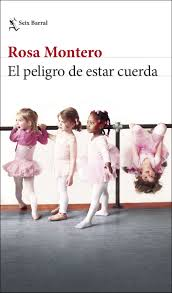

Produccion Literaria
Aqui veremos algunas de sus obras mas destacadas y sus caracteristicas:
- Cronica del desamor - 1978
- La funcion delta - 1981
- Te tratare como a una reina - 1983
- Bella y Oscura - 1993
- La hija del caniba; - 1997
- La loca de la casa - 2003
- Historia del rey transparente - 2005
- Instrucciones para salvar el mundo - 2008
- Lagrimas en la lluvia - 2011
- La ridicula idea de no volver a verte - 2013
- El peso del corazon - 2015
- La carne - 2016
- Los tiempos de odio - 2018
- La buena suerte - 2022
- El peligro de estar cuerda - 2022

Caracteristicas de sus obras
- Rosa Montero mezcla generos como la novela, el ensayo y la ciencia ficcion.
- Sus protagonistas suelen ser mujeres fuertes, inteligentes y con conflictos internos.
- En sus libros reflexiona sobre la identidad. la muerte, el amor y el sentido de la vida.
- Su estilo es claro, cercano y lleno de emocion.
- A menudo incorpora elementos autobiograficos en sus historias.
- Explora la locura, la libertad y el poder de la imaginacion.
- Le gusta unir la realidad con la fantasia y lo racional con lo emocional.
- Sus obras invitan a pensar, sentir y cuestionar el mundo.